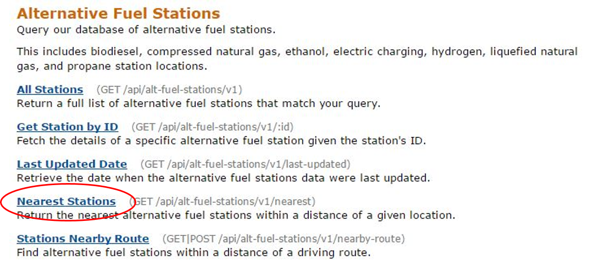
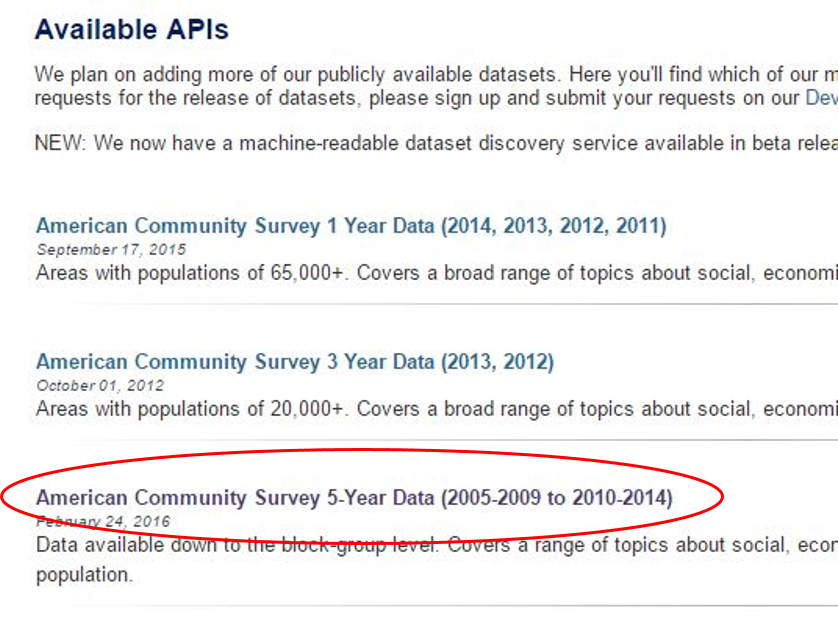

In order to use some of the available APIs, you need to register for a key. For the mashup we will be making, we will need a key from the National Renewable Energy Laboratory(NREL) and a key from the Census Bureau.
We will also be using the United States Department of Agriculture's Farmers Market Directory API, but it does not require a key.
Once we signup for an API key we will have access to the Alternative Fuel Stations database.
There are many ways to use this particular API, but we will be search for stations on the "nearest" parameter.

Now we need to request a key for the Census Bureau.
Again, the Census Bureau provides many different datasets for public access. We are interested in the "American Community Survey 5-Year Data" dataset.
